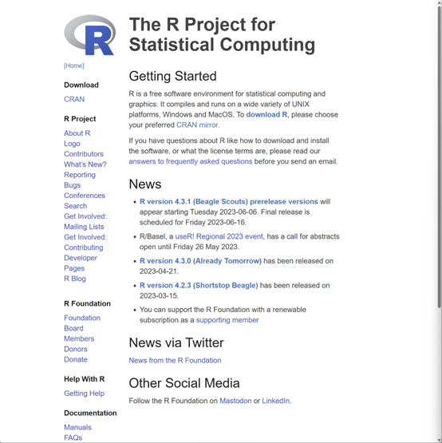
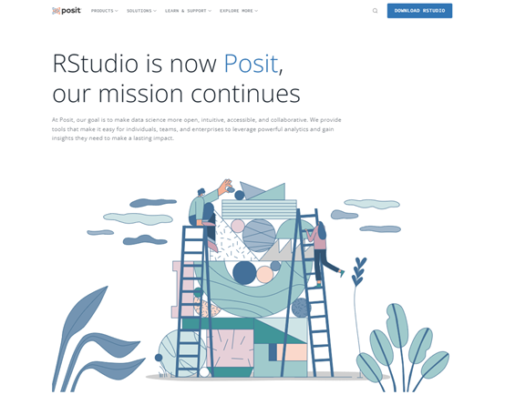
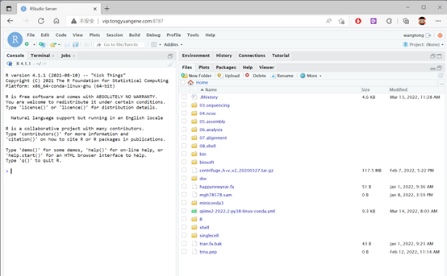
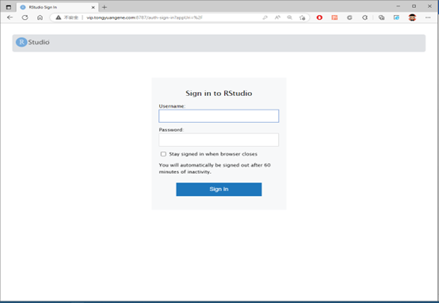
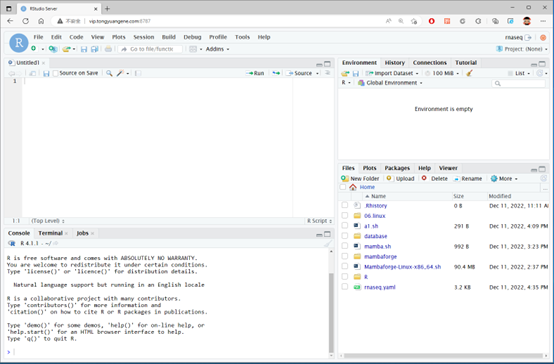

4 R软件安装
4.1 R语言简介
R语言支持windows，macos，linux等多个系统平台，提供图形化界面，下载和安装都不难，可以直接从官网进行下载，当前最新版本为4.31。R语言平均每半年更新一个比较大的版本，中间也会有一些小版本，建议安装最新的版本。可以从R的官网下载软件安装包，此外，微软也提供一个版本的R软件，微软版本的R提供一些额外功能，例如对多线程支持更好。软件最好安装到系统默认目录下。
安装建议:
- R和Rstudio建议安装最新版本；
- 选择最近的镜像地址；
- 检查用户名是否为中文，Rstudio不支持中文；
- 先安装R，在安装Rstudio；
- 软件安装到系统默认目录下；
- 如果有需要，安装Rtools；
- 苹果电脑Arm芯片需要选择合适的版本。
R官网： https://www.r-project.org/
Microsoft R：https://mran.microsoft.com/
注释
截止到2023年5月，R最新版本为4.3.0）
4.1.1 windows系统：
4.1.2 Mac系统
###ubuntu系统：
#添加源
# update indices
sudo apt update -qq
# install two helper packages we need
sudo apt install --no-install-recommends software-properties-common dirmngr
# add the signing key (by Michael Rutter) for these repos
# To verify key, run gpg --show-keys /etc/apt/trusted.gpg.d/cran_ubuntu_key.asc
# Fingerprint: E298A3A825C0D65DFD57CBB651716619E084DAB9
wget -qO- https://cloud.r-project.org/bin/linux/ubuntu/marutter_pubkey.asc | sudo tee -a /etc/apt/trusted.gpg.d/cran_ubuntu_key.asc
# add the R 4.0 repo from CRAN -- adjust 'focal' to 'groovy' or 'bionic' as needed
sudo add-apt-repository "deb https://cloud.r-project.org/bin/linux/ubuntu $(lsb_release -cs)-cran40/"
#安装R
sudo apt install --no-install-recommends r-base4.1.3 CentOS系统：
#安装epel源
yum install -y epel-release
#安装R
yum install -y R.x86_644.1.4 bioconda安装R
conda install -y r-base=4.34.2 Rstudio软件安装
4.2.1 安装Rstudio
当前R语言的集成开发环境很多，但其中Rstudio可以说是最优秀的，Rstudio是R软件的一个集成开发环境，为R的使用提供了极大的便利，Rstudio本身并不集成R软件，需要首先安装R软件，Rstudio会调用R软件。Rstudio支持windows，macos，Linux等多个系统平台，并且提供免费的桌面版与服务器版本可供选择，服务器版本可以搭建多用户使用场景，直接通过网络浏览器访问R。此外，Rstudio公司还开发了大量R语言的扩展包，操作简单，功能强大，极大扩展了R语言的功能。目前Rstudio公司已改名Posit。
官方网站：https://posit.co/
下载地址：https://posit.co/download/rstudio-desktop/
注释
（截止到2023年5月，Rstudio最新版本为2023.03.1-446）

4.2.2 rstudio-server安装
rstudio-server是rstudio的服务器版本，安装在linux系统下，通过rstudio-server，启动服务后，可以通过浏览器访问，使用在线版本R语言。

4.2.3 解决Rstudio无法识别中文问题
方法一：创建一个新账户 创建一个新的英文账户，或者修改本地账户为使用windows账户登录。
方法二：修改缓存目录 Rstudio遇到中文报错，主要原因在于，Rstudio需要一个临时缓存文件，windows系统下这个默认目录在”C:“。其中XXXX为用户名，如果是中文，则无法识别，所以，我们需要修改TEMP和TMP这个目录环境变量。
4.3 Rstudio-server
4.3.1 登入rstudio-server
Rstudio提供一个rstudio-server服务器端程序，可以通过浏览器访问Rstudio环境。如果是系统管理员，可以安装rstudio-server服务，默认版本的Rstudio-server只支持一个版本的R。每个用户只能使用管理员设定的R版本。无法将自己安装的R语言软件在网页端使用，请知悉这点。但可以自己安装R扩展包。 通过浏览器，例如Chrome，Firefox，Safari等均可，尽量别使用IE以及360浏览器，可能会登录失败。rstudio-server默认端口号为8787，只需在IP地址之后加上端口号即可，账户密码与SSH登录账号一样。 登录网址：根据个人购买服务器IP进行登录，例如我们的服务器IP地址为”vip.tongyuangene.com”，只需在下面加上端口号即可。例如使用下面地址进行登录http://vip.tongyuangene.com:8787 注意端口号要写清楚。登录账户密码与服务器登录账户密码一致。

输入账户密码，与登录服务器账户密码相同。登录之后就可以使用Rstudio了。
